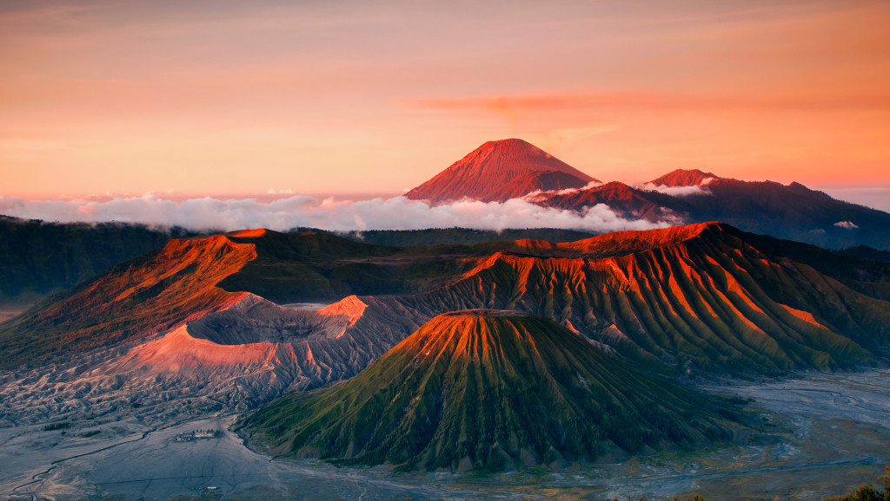

Keindahan Gunung Bromo dan Misteri yang Tak Pernah Pudar
Selasa, 20 November 2024
by Eling Anggie Trikunari
Gunung Bromo, salah satu ikon wisata Jawa Timur, bukan hanya dikenal karena keindahan panoramanya yang memukau, tetapi juga karena kisah-kisah mistis serta sejarah yang melekat pada tempat ini. Terletak di kawasan Taman Nasional Bromo Tengger Semeru, Gunung Bromo menjadi destinasi favorit wisatawan lokal maupun mancanegara. Namun, di balik pesonanya, ada cerita menarik yang menambah daya tarik gunung ini.
Legenda Gunung Bromo dan Suku Tengger
Nama "Bromo" berasal dari Brahma, salah satu dewa dalam agama Hindu. Gunung ini erat kaitannya dengan keberadaan
suku Tengger, yang masih memegang teguh tradisi Hindu hingga saat ini. Menurut legenda, pasangan suami-istri Joko Seger
dan Roro Anteng memohon kepada para dewa untuk mendapatkan keturunan. Doa mereka dikabulkan dengan syarat anak bungsu mereka
harus dikorbankan kepada Gunung Bromo.
Ketika tiba waktunya, pasangan tersebut menolak memenuhi janji mereka. Akibatnya, Gunung Bromo meletus dengan dahsyat.
Anak bungsu mereka, Kusuma, akhirnya menyerahkan dirinya agar keluarganya selamat. Hingga kini, suku Tengger mengenang
peristiwa itu melalui upacara Yadnya Kasada, di mana mereka mempersembahkan hasil bumi ke kawah Gunung Bromo.
Pesona Mistis Gunung Bromo
- Kawah Bromo yang Angker: Kawah ini dianggap tempat keramat. Wisatawan sering diminta menjaga sikap agar tidak menyinggung penghuni gaib. Suara-suara aneh kadang terdengar di sekitar kawah.
- Pasir Berbisik: Lautan pasir di sekitar Gunung Bromo menciptakan suara seperti bisikan karena angin. Meski indah, area ini juga dianggap memiliki energi misterius.
- Gunung Batok yang "Hidup": Gunung Batok dipercaya sebagai penjaga Bromo. Bentuknya yang menyerupai batok kelapa dianggap sebagai simbol kekuatan spiritual kawasan ini.
Daya Tarik Wisata Gunung Bromo
Selain cerita mistis, Gunung Bromo menawarkan keindahan alam yang luar biasa:
- Golden Sunrise: Pemandangan matahari terbit yang menakjubkan.
- Lautan Pasir: Hamparan pasir seluas 10 km² yang memberikan pengalaman unik.
- Pura Luhur Poten: Pusat kegiatan keagamaan suku Tengger yang menambah nilai budaya tempat ini.
Tips Berwisata ke Gunung Bromo
- Pilih waktu yang tepat: Musim kemarau (April-Oktober) adalah waktu terbaik untuk berkunjung.
- Pakaian hangat: Suhu di Bromo sangat dingin, terutama dini hari.
- Hormati tradisi lokal: Menghormati adat suku Tengger adalah hal yang penting.